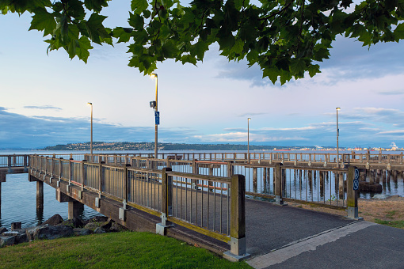
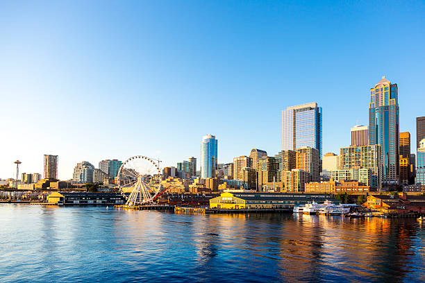

Ruston Way is a beautiful place to go boating. Located in Tacoma Washington, its paved waterfront trail perfect for walking, jogging, and cycling, and its connection to the vibrant Point Ruston neighborhood.

In the heart of the Emerald city, with a lot of piers, it is the heart of Seattle. Next to it is Pike Place Market, one of the famous farmers market open.
